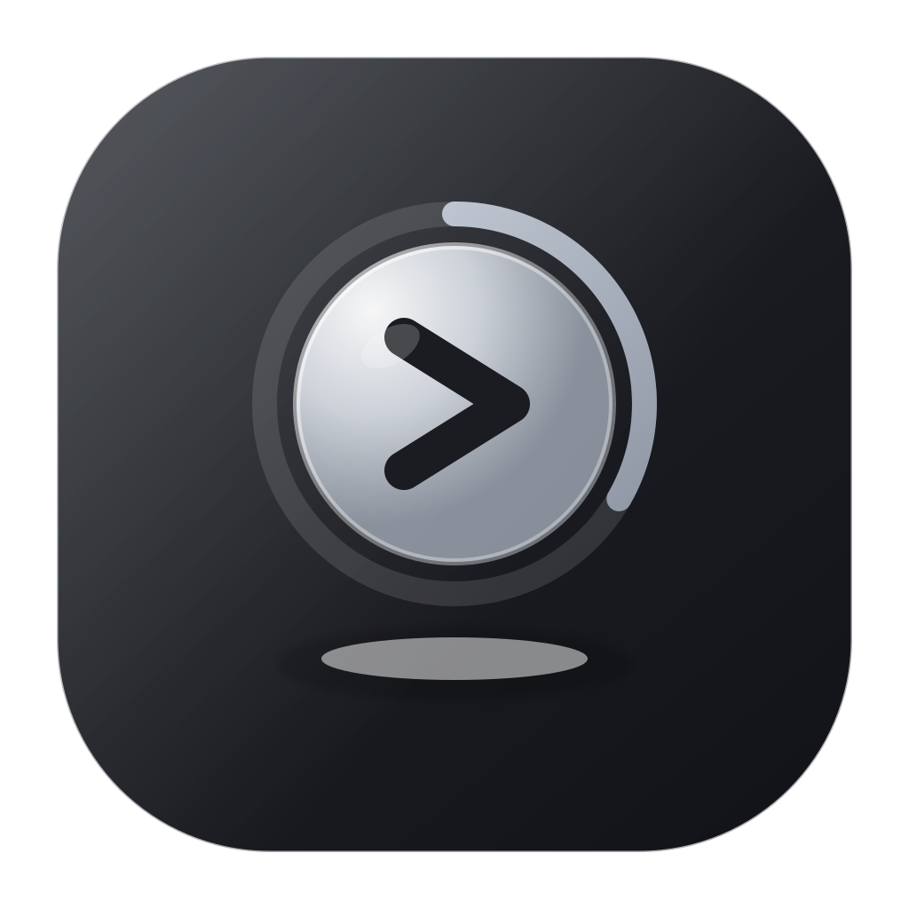

当前稿（浅蓝玻璃 + 青绿进度 + 深黑 >）色相跨度大，容易「不配」。
下面 6 套都保持同一结构（外环 1/3 + 球 + >），只换色系，方便你挑。
全冷灰一系：球、环、墨同一色温，没有绿撞蓝。

深石墨底 + 银白玻璃 + 冷银进度。更像原生菜单栏工具。

米白/香槟玻璃 + 琥珀进度。轻盈温暖，避开冷绿。

球与进度同属青灰一系（非黄绿），比蓝+绿更顺。
淡紫玻璃 + 靛色进度 + 深靛墨。偏产品感、略独特。

几乎无彩：白纸底、灰玻璃、纯墨进度。最克制。

个人建议：若要贴 macOS 菜单栏气质，优先 Slate Mono 或 Graphite Night； 若要更 Tahoe 暖玻璃，选 Warm Sand； 若还想保留一点「科技青」但不撞色，选 Ocean Mist（单色青灰，不是蓝+绿两套）。 选定后我会把主 icon / mark / 代码主题色切过去。